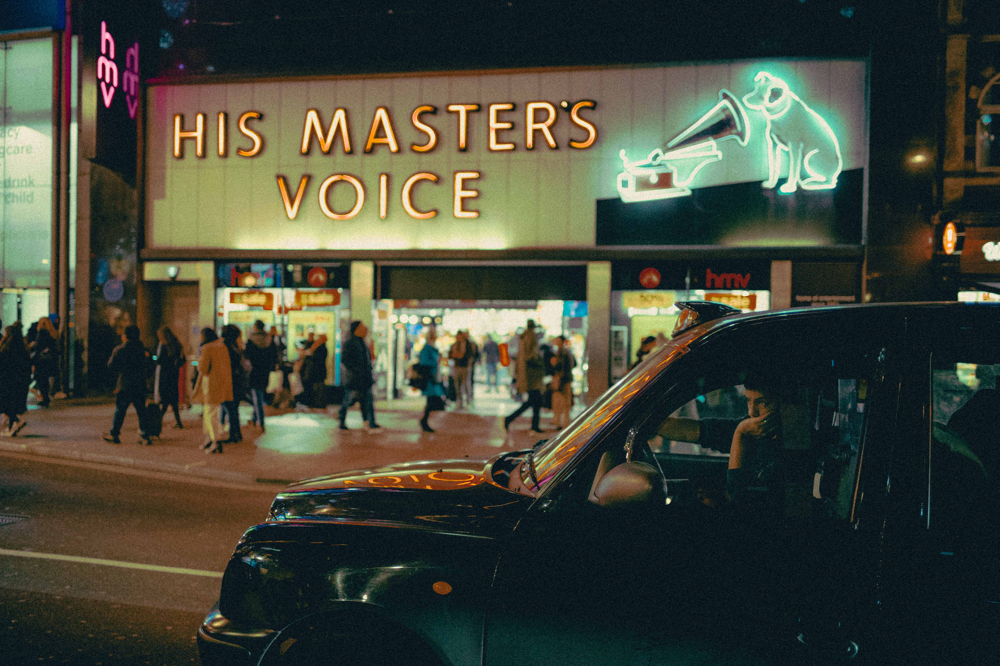

Li Shen
Types of photography: Street Urban Architecture
Introduction: I work at Imperial College London as a research fellow in bubbles and fluid dynamics
Origin story: I was doing my progress report for my PhD and decided to get a picture of some bubbles as a cover photo. I bought my first DSLR then (a Nikon D3400), and it's been a few years since then
Favourite photo: Man with smoke - it's from my previous trip back home in a park in Shanghai, I had just gotten a rangefinder from Hong Kong at the time (new camera, new lens - M10 + 50 Summicron) so was quite keen to give street photography a go. I think street photography is more of a mindset and being a little more brave than I was previously where I was taking photos of architecture and buildings. This picture was the first image I was "wow'd" at how it feels when a few things came together, so it perhaps has more sentimental value

Second favourite photo: It is hard to choose favourites. But this one is another one of my favourites partly because the HMV in the background has now been closed and so the sign will never be lit up again unfortunately. I remember this picture was taken as I was walking home to a tube station one Friday night after some beers and the waiting cab provided a nice urban contrast to the lights in the background. After some moody edits the next day during a break, I was then a fan, it shows off two things I like, which is Neon lights in London and random elements of street photography coming together
Equipment used: M10 with 21 super-elmar/28 summicron/50 summicron/135mm apo-telyt
Advice for newbies: Take many pictures at first and practice often. "Success rate" is a function of practicing lots without fear that they are "bad" pictures and then, after knowing what you like, be relentless in creating said vision with more practice. And when it gets dull, practice more to find out what is not dull, and then practice more again :)
See more of my work: Flickr